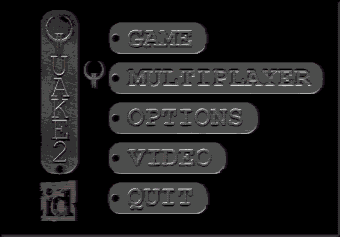
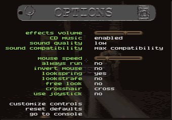

Quake II's "Multiplayer" allows multiple players to enter a game together, over the Internet or on your local area network. The most popular way to play Quake II Multiplayer is a Deathmatch, which has no monsters, just player versus player! The goal of the game is to kill your opponents more often than they kill you. Each kill counts for one "frag", and if you kill yourself then you lose a frag, thus it's not a great idea to go swimming in the lava or juggle your own grenades. Another multiplayer mode is Cooperative or "co-op". In a co-op game up to four players can join in a game to combate the monsters of Stroggos as team. The rules for this method of play are similar to a single player game, except up to four people can go after the enemy together. After you die, press the Space Bar to reappear, or "respawn", in the game. You’ll be brought back at one of several random respawn locations. Throughout the map you will find different artifacts, such as weapons, ammo, health and powerups, that are needed to be successful at destroying your enemy. When starting a Quake II Multiplayer Server, you have the option of making weapons disappear when you pick them up and respawn after time (length of time depends on item), or they can be made to stay put at all times so your Deathmatch experience is a true fragfest!  
Join Network Server Under the JOIN SERVER menu are two options that will help you locate and join in network games. The first is "address book", which is used to store and recall the IP addresses or hostnames of Internet servers. A good starting place for finding servers to add to your address book can be found at http://www.idsoftware.com/q2multiplayer. The second option you have is "search for servers", which will display a list of servers running on your local area network as well as any you have entered into your address book. To add servers to your address book, simply move down to an available spot and type in the hostname or IP address of the server. To join a server that is listed in your address book highlight that server and hit ENTER. To search for and connect to a server on your local area network simply select SEARCH FOR SERVERS, then press ENTER on any of the servers that appear under "connect to...".
INITIAL MAP: This allows you to select first map for your Deathmatch server. The server will advance to the next map. What causes it to advance depends on the following two options. TIME LIMIT: Set the number of minutes that the game will run before advancing to the next map. FRAG LIMIT: Once any player attains this number of frags the game will automatically advance to the next map. FALLING DAMAGE: This determines whether or not you take health damage when falling from high places. WEAPONS STAY: Setting this to YES will make the weapons stay available, even after being picked up a player. This does not apply to other artifacts, such as ammo, health and powerups. INSTANT POWERUPS: Powerups take effect the moment you pick them up when this is set to YES. ALLOW POWERUPS: This option toggles whether powerups show up in the map. ALLOW HEALTH: This option toggles whether health shows up in the map. ALLOW ARMOR: This option toggles whether armor shows up in the map. SPAWN FARTHEST: Switches between random spawning and spawning players in the furthest position relative to other players. SAME MAP: When the fraglimit or timelimit is reached, the map will not advance to the next map, but will start the current map over. FORCE RESPAWN: Forces the player to respawn 5 seconds after being killed.
NAME: This sets the name of your player. This way when you frag someone, they'll know who did it! MODEL: This allows you to select whether your player is male, female or cyborg. SKIN: Skins give your player a unique look. Quake II provides 10 female and 15 male player skins to choose from. For team play, all team mates should select the same skin. HANDEDNESS: Switches your weapon between right and left hand views. Also allows a center aligned mode where no weapon is drawn. Center is often easier to aim, and because no weapon is drawn the game will run faster. A note on SERVERINFO: If you pull down the console (hit the ~ key) and type SERVERINFO you will get back a list of the current settings for the server you are connected to. This list includes such things as map name, server name, time and frag limits. |